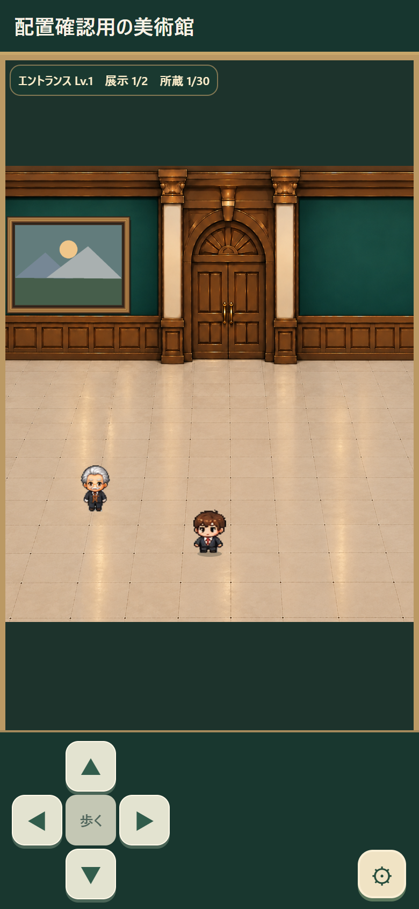
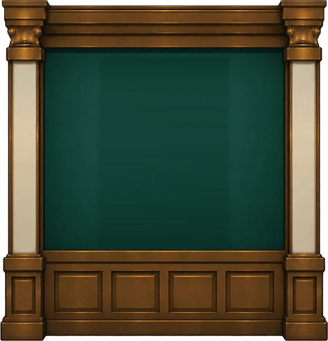
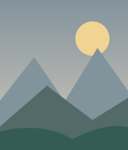
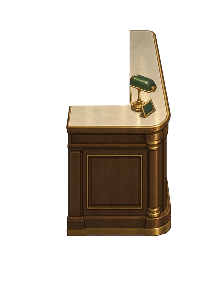

実際のゲーム画面＋制作済みのカウンター・仕切り壁。ドラッグでそのまま配置を調整できます。




背景・キャラ・UI：隔離Chromeで実ゲームを描画。執事だけ仮に受付内側へ移動。家具は独立透過素材。カウンターは椅子と棚を除去、仕切り壁は台紙・額縁なし。ゲーム内の保存データは変更されません。
選択した設備の調整
右の仕切り壁
透過PNGにも対応。差し替え画像はこの端末内での表示用で、共有リンクには含まれません。
配置を残す・共有する
変更はこのブラウザに自動保存。確認が終わったら「配置リンクをコピー」してチャットに貼ってね。正確な座標をこちらで受け取れます。
配置座標はゲーム画面の画像基準（幅780×高さ1688px）。実素材の位置合わせ用で、当たり判定・本番ゲームの操作画面ではありません。写真は仮画像です。